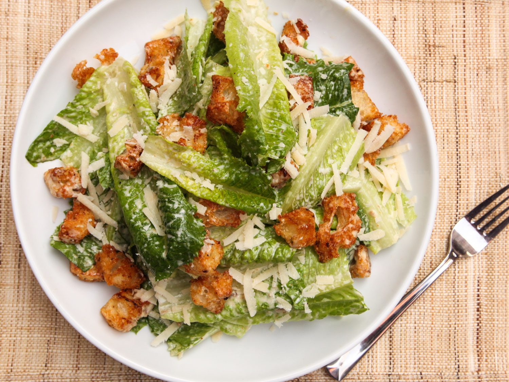

Not a Salad
- 1 clove garlic
- 1 tablespoon lemon juice
- 1 tablespoon worcestershire sauce
- 10 small capers
- 1/4 cup parmesan
- 1 egg room temperature
- 2 anchovy filets
- 1/2 cup light olive oil or canola oil
- fresh black pepper
- 8 cups romaine lettuce
- 1 cup croutos
- 1/3 cup parmesan cheese
- 1/2 tablespoon dijon mustard
